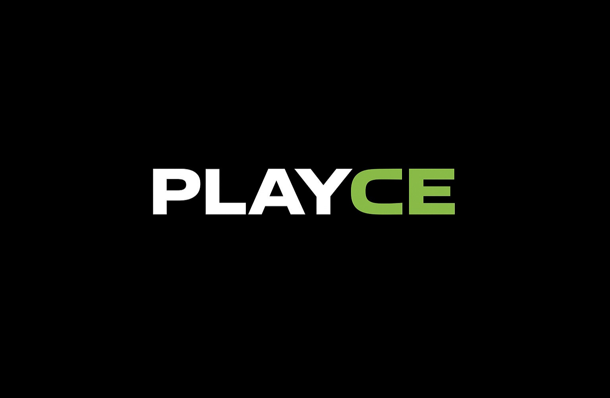

Live matchPartido en vivo
Player A
40Player B
ADWatch scorerScorer en reloj

iPhone + Apple Watch · Android + Wear OS · GarminiPhone + Apple Watch · Android + Wear OS · Garmin
PLAYCE is a tennis and padel scoring system built for real courtside use. Track live points on your watch — Apple Watch, Wear OS or Garmin — sync to iPhone or Android instantly, then review history, stats, exports and share cards after the match.
PLAYCE es un sistema de marcador de tenis y pádel pensado para usarse en la cancha. Llevá los puntos en vivo desde tu reloj — Apple Watch, Wear OS o Garmin — sincronizá al instante con tu iPhone o Android, y después revisá historial, stats, exports y tarjetas para compartir el resultado.
Player A
40Player B
ADWatch scorerScorer en reloj
Live from watchEn vivo desde el reloj
01:23:44Phone companionCompanion en el teléfono
Full tennis scoring with deuce, advantage, sets, standard tiebreaks and configurable formats including Fast4 and Grand Slam.
Scoring de tenis completo con deuce, ventaja, sets, tiebreaks estándar y formatos configurables como Fast4 y Grand Slam.
Wearable Data Layer (Wear OS), WatchConnectivity (Apple Watch) and Connect IQ (Garmin) — all with pending state, retries and ACK confirmation.
Wearable Data Layer (Wear OS), WatchConnectivity (Apple Watch) y Connect IQ (Garmin) — todos con estado pendiente, reintentos y confirmación ACK.
Premium is a one-time unlock. No monthly fees, no trial countdown, no surprises.
Premium es un desbloqueo único. Sin cuotas mensuales, sin trial, sin sorpresas.
The productEl producto
PLAYCE is structured around a simple idea: the watch is the input device during play, and the phone is the companion display, archive and sharing hub afterwards. The same logic runs across Apple Watch, Wear OS and Garmin.
PLAYCE está estructurado alrededor de una idea simple: el reloj es el dispositivo de entrada durante el juego, y el teléfono es el companion para mostrar, archivar y compartir después. La misma lógica corre en Apple Watch, Wear OS y Garmin.
01 / On courtEn la cancha
Use the watch to track points, undo mistakes, monitor the server, follow tiebreak rotation and finish the match with a manual save flow that keeps state visible.
Usá el reloj para sumar puntos, deshacer errores, ver quién saca, seguir la rotación de tiebreak y cerrar el partido con un guardado manual que mantiene el estado visible.
02 / In your pocketEn tu bolsillo
History, detail screens, stats, CSV export, share cards and (on Android) home screen widget — all on iPhone or Android.
Historial, pantalla de detalle, stats, exportación a CSV, tarjetas para compartir y (en Android) widget en la pantalla de inicio — todo en iPhone o Android.
03 / PremiumPremium
Free scoring counter by default, with a one-time unlock for save, history, detail, stats and sharing. No subscription, no trial, no upsell.
Contador gratis por default, con desbloqueo único para guardar, historial, detalle, stats y compartir. Sin suscripción, sin trial, sin upsell.
ExperienceExperiencia
The interface is minimal and high-contrast because tennis and padel scoring needs legibility first. Large numerals, sharp section rhythm, restrained color and clear state transitions keep the app fast to read mid-point.
La interfaz es minimal y de alto contraste porque marcar un partido de tenis o pádel exige legibilidad primero. Números grandes, ritmo claro entre secciones, color restringido y transiciones de estado nítidas — la app se lee al toque incluso en mitad de un punto.
Configure player names and match format on your phone, then push it to the watch before play starts.
Configurá los nombres y el formato del partido en el teléfono, después mandalo al reloj antes de empezar.
The live score syncs to the phone while the watch remains the primary scorer.
El score en vivo se sincroniza al teléfono mientras el reloj sigue siendo el scorer principal.
Pending match state is stored locally on the watch until the phone acknowledges receipt.
El partido pendiente queda guardado localmente en el reloj hasta que el teléfono confirma la recepción.
Once saved, the match becomes part of the phone-side archive and sharing flow.
Una vez guardado, el partido pasa al historial del teléfono y al flujo para compartir.
Feature setFunciones
Everything you read here reflects what the app actually ships today across iOS, Android, Wear OS, Apple Watch and Garmin.
Todo lo que leés acá refleja lo que la app efectivamente entrega hoy en iOS, Android, Wear OS, Apple Watch y Garmin.
Tap-based scoring with optional hardware buttons (STEM_1 / STEM_2 on Wear OS) and responsive layouts for small circular screens.
Score con tap más botones físicos opcionales (STEM_1 / STEM_2 en Wear OS) y layouts responsivos para pantallas circulares chicas.
Points, games, sets, deuce, advantage, tiebreaks, super tiebreak, no-ad and configurable match formats — same rules across every platform.
Points, games, sets, deuce, ventaja, tiebreaks, super tiebreak, no-ad y formatos configurables — las mismas reglas en todas las plataformas.
On Apple Watch, the match runs as a HealthKit workout session so your time on court counts toward your activity in the Health app.
En Apple Watch, el partido corre como workout de HealthKit así tu tiempo en cancha cuenta en la app Salud.
Wearable Data Layer for Wear OS, Connect IQ Mobile SDK for Garmin (Epix Pro 2 today, more models coming) — idempotent delivery and ACK cleanup on both.
Wearable Data Layer para Wear OS, Connect IQ Mobile SDK para Garmin (Epix Pro 2 hoy, más modelos en camino) — entrega idempotente y limpieza por ACK en ambos.
Match counts, duration summaries, average / longest / shortest match, full per-match detail and CSV export for the geeks.
Cantidad de partidos, resúmenes de duración, promedio / más largo / más corto, detalle completo por partido y export a CSV para los geeks.
Generate and share a polished match summary image — final score, set breakdown, total time — straight to WhatsApp, Instagram or anywhere your share sheet goes.
Generá y compartí una imagen prolija del resumen del partido — score final, detalle de sets, tiempo total — directo a WhatsApp, Instagram o donde apunte tu share sheet.
PricingPrecio
The free counter on your phone is fully functional. Unlock match save, history, detail, stats and share with a single one-time purchase on whichever store you use.
El contador gratis en el teléfono funciona completo. Desbloqueá guardado, historial, detalle, stats y compartir con una sola compra única en la store que uses.
One-time unlock. iPhone + Apple Watch. Includes HealthKit workout integration.
Desbloqueo único. iPhone + Apple Watch. Incluye integración con HealthKit como workout.
Get on App StoreComprar en App StoreOne-time unlock. Android + Wear OS + Garmin companion bridge. Includes home screen widget.
Desbloqueo único. Android + Wear OS + bridge companion para Garmin. Incluye widget de pantalla de inicio.
Get on Google PlayComprar en Google PlayAvailable nowDisponible ahora
Available on iPhone, Apple Watch, Android, Wear OS and Garmin. Free to start, one-time unlock for the full experience.
Disponible en iPhone, Apple Watch, Android, Wear OS y Garmin. Gratis para empezar, desbloqueo único para la experiencia completa.
FAQ
Yes. The scoring engine handles padel matches with the same point / game / set / tiebreak rules as tennis, plus configurable formats like Fast4. Padel and tennis share scoring logic.
Sí. El motor de score maneja partidos de pádel con las mismas reglas de point / game / set / tiebreak que tenis, más formatos configurables como Fast4. Pádel y tenis comparten lógica de score.
No. You can use just the phone as a manual counter (free). The full experience — watch-based live scoring with sync — needs a paired Apple Watch, Wear OS watch or Garmin device.
No. Podés usar solo el teléfono como contador manual (gratis). La experiencia completa — score en vivo desde el reloj con sync — requiere un Apple Watch, un reloj Wear OS o un Garmin emparejado.
At launch, the Garmin app runs on Epix Pro 2 (47mm). Support for more Garmin models is the next development priority.
En el lanzamiento, la app Garmin corre en Epix Pro 2 (47mm). Sumar más modelos de Garmin es la próxima prioridad de desarrollo.
No. Premium is a one-time purchase: USD 3.99 on iOS, USD 3.33 on Android. No monthly fee, no trial, no recurring charge.
No. Premium es una compra única: USD 3.99 en iOS, USD 3.33 en Android. Sin cuota mensual, sin trial, sin cargo recurrente.
Score full matches from the phone counter or the watch scorer. Premium adds saving matches to history, viewing detail and stats, exporting CSV, and sharing match cards.
Marcar partidos completos desde el contador del teléfono o desde el scorer del reloj. Premium suma guardar partidos al historial, ver detalle y stats, exportar a CSV y compartir tarjetas del partido.
Locally on your devices. PLAYCE does not operate a backend for match storage. See the privacy policy for details.
Localmente en tus dispositivos. PLAYCE no opera un backend para guardar partidos. Más detalles en la política de privacidad.